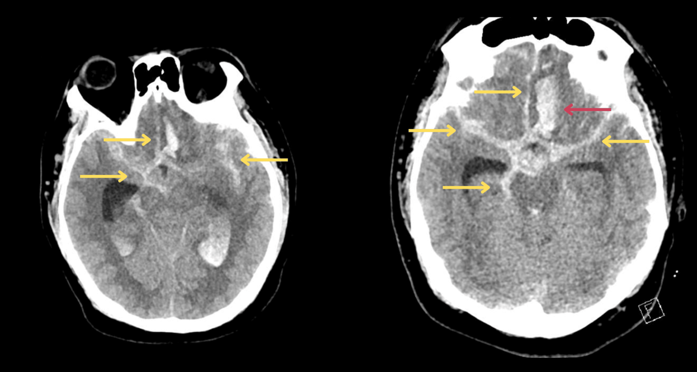

Página 2 · E7
A dor é a doença — ou a doença é outra?
“Numa, a cefaleia é a doença. Na outra, a dor só denuncia o que está acontecendo por trás.”
Primária = a cefaleia é a doença
As cefaleias dividem-se em dois grandes grupos: primárias e secundárias. Nas primárias, a doença é a cefaleia (a cefaleia enquanto doença). Exemplos: enxaqueca, cefaleia tensional, cefaleia em salvas e algumas outras (lista aberta, não fechada).
Secundária = denuncia outra doença
Na secundária, a dor é secundária a outro problema. Exemplos: hemorragia subaracnoide; hemorragia intraparenquimatosa; dengue; meningite; gripe — e qualquer outro processo capaz de gerar dor de cabeça. Secundária não se restringe a catástrofe vascular: infecções sistêmicas também contam.
Slogan HSA
Slogan clássico da hemorragia subaracnoide: “a pior cefaleia da vida”. É âncora de prova — e alarme clínico quando o enunciado entrega essa marca.
Primária se lê em crises
Caracterizar bem uma cefaleia primária na anamnese (ou no enunciado) exige reconhecer o padrão de crises — não dor contínua o tempo todo.

Quiz — fixação
-
“A pior cefaleia da vida” ainda, no discurso de prova, qual entidade?
Gabarito B. o slogan é a âncora verbal da HSA — secundária vascular grave, não primária.
(A) tensional é primária, sem esse slogan. (C) enxaqueca pode ser intensa, mas o bordão de prova da “pior da vida” aponta HSA. (D) sinusite é secundária “comum”, sem esse slogan. Cai em (C) porque intensidade alta da enxaqueca confunde com o slogan; em (A) quem memoriza “dor comum = tensional”.
-
Qual afirmação define corretamente cefaleia secundária?
Gabarito B. secundária = a cefaleia é sintoma de outro processo — vascular, infeccioso, sistêmico etc.
(A) define primária. (C) normalidade de exame é marca de primária, não regra de secundária. (D) tumor é um exemplo; as causas secundárias são muito mais amplas. Cai em (A) por inverter o binário; em (D) por reduzir secundária a “neoplasia”.
-
Entre as cefaleias primárias estão:
Gabarito B. a lista de primárias é enxaqueca · tensional · salvas · “algumas outras” — aberta de propósito.
(A) incompleto. (C) são secundárias. (D) primária tipicamente tem exame normal. Cai em (A) porque enxaqueca domina a memória de prova; em (C) por confundir grupos.